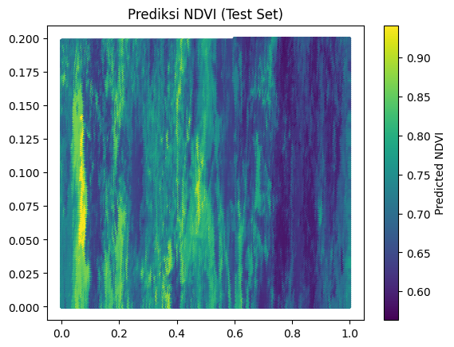

Time Series#
Disini saya akan ambil data geospasial dari Copernicus Data Space (via OpenEO API) dan lanjutkan analisisnya di Python (sampai ke tahap KNN Regression).
1. Mengambil data dari Copernicus Data Space (OpenEO)#
Sebelum itu pastikan untuk menginstal pustaka:
pip install openeo geopandas pandas scikit-learn rasterio
Requirement already satisfied: openeo in /usr/local/lib/python3.12/dist-packages (0.45.0)
Requirement already satisfied: geopandas in /usr/local/lib/python3.12/dist-packages (1.1.1)
Requirement already satisfied: pandas in /usr/local/lib/python3.12/dist-packages (2.2.2)
Requirement already satisfied: scikit-learn in /usr/local/lib/python3.12/dist-packages (1.6.1)
Collecting rasterio
Downloading rasterio-1.4.3-cp312-cp312-manylinux_2_17_x86_64.manylinux2014_x86_64.whl.metadata (9.1 kB)
Requirement already satisfied: requests>=2.26.0 in /usr/local/lib/python3.12/dist-packages (from openeo) (2.32.4)
Requirement already satisfied: urllib3>=1.9.0 in /usr/local/lib/python3.12/dist-packages (from openeo) (2.5.0)
Requirement already satisfied: shapely>=1.6.4 in /usr/local/lib/python3.12/dist-packages (from openeo) (2.1.2)
Requirement already satisfied: numpy>=1.17.0 in /usr/local/lib/python3.12/dist-packages (from openeo) (2.0.2)
Requirement already satisfied: xarray<2025.01.2,>=0.12.3 in /usr/local/lib/python3.12/dist-packages (from openeo) (2025.1.1)
Requirement already satisfied: pystac>=1.5.0 in /usr/local/lib/python3.12/dist-packages (from openeo) (1.14.1)
Requirement already satisfied: deprecated>=1.2.12 in /usr/local/lib/python3.12/dist-packages (from openeo) (1.2.18)
Requirement already satisfied: pyogrio>=0.7.2 in /usr/local/lib/python3.12/dist-packages (from geopandas) (0.11.1)
Requirement already satisfied: packaging in /usr/local/lib/python3.12/dist-packages (from geopandas) (25.0)
Requirement already satisfied: pyproj>=3.5.0 in /usr/local/lib/python3.12/dist-packages (from geopandas) (3.7.2)
Requirement already satisfied: python-dateutil>=2.8.2 in /usr/local/lib/python3.12/dist-packages (from pandas) (2.9.0.post0)
Requirement already satisfied: pytz>=2020.1 in /usr/local/lib/python3.12/dist-packages (from pandas) (2025.2)
Requirement already satisfied: tzdata>=2022.7 in /usr/local/lib/python3.12/dist-packages (from pandas) (2025.2)
Requirement already satisfied: scipy>=1.6.0 in /usr/local/lib/python3.12/dist-packages (from scikit-learn) (1.16.2)
Requirement already satisfied: joblib>=1.2.0 in /usr/local/lib/python3.12/dist-packages (from scikit-learn) (1.5.2)
Requirement already satisfied: threadpoolctl>=3.1.0 in /usr/local/lib/python3.12/dist-packages (from scikit-learn) (3.6.0)
Collecting affine (from rasterio)
Downloading affine-2.4.0-py3-none-any.whl.metadata (4.0 kB)
Requirement already satisfied: attrs in /usr/local/lib/python3.12/dist-packages (from rasterio) (25.4.0)
Requirement already satisfied: certifi in /usr/local/lib/python3.12/dist-packages (from rasterio) (2025.10.5)
Requirement already satisfied: click>=4.0 in /usr/local/lib/python3.12/dist-packages (from rasterio) (8.3.0)
Collecting cligj>=0.5 (from rasterio)
Downloading cligj-0.7.2-py3-none-any.whl.metadata (5.0 kB)
Collecting click-plugins (from rasterio)
Downloading click_plugins-1.1.1.2-py2.py3-none-any.whl.metadata (6.5 kB)
Requirement already satisfied: pyparsing in /usr/local/lib/python3.12/dist-packages (from rasterio) (3.2.5)
Requirement already satisfied: wrapt<2,>=1.10 in /usr/local/lib/python3.12/dist-packages (from deprecated>=1.2.12->openeo) (1.17.3)
Requirement already satisfied: six>=1.5 in /usr/local/lib/python3.12/dist-packages (from python-dateutil>=2.8.2->pandas) (1.17.0)
Requirement already satisfied: charset_normalizer<4,>=2 in /usr/local/lib/python3.12/dist-packages (from requests>=2.26.0->openeo) (3.4.4)
Requirement already satisfied: idna<4,>=2.5 in /usr/local/lib/python3.12/dist-packages (from requests>=2.26.0->openeo) (3.11)
Downloading rasterio-1.4.3-cp312-cp312-manylinux_2_17_x86_64.manylinux2014_x86_64.whl (22.3 MB)
━━━━━━━━━━━━━━━━━━━━━━━━━━━━━━━━━━━━━━━━ 22.3/22.3 MB 96.3 MB/s eta 0:00:00
?25hDownloading cligj-0.7.2-py3-none-any.whl (7.1 kB)
Downloading affine-2.4.0-py3-none-any.whl (15 kB)
Downloading click_plugins-1.1.1.2-py2.py3-none-any.whl (11 kB)
Installing collected packages: cligj, click-plugins, affine, rasterio
Successfully installed affine-2.4.0 click-plugins-1.1.1.2 cligj-0.7.2 rasterio-1.4.3
Lanjut ke python script:
import openeo
import geopandas as gpd
# 1️⃣ Hubungkan ke backend Copernicus
conn = openeo.connect("https://openeo.dataspace.copernicus.eu/openeo/1.2")
# (opsional) login kalau mau data tertentu
conn.authenticate_oidc() # akan membuka browser untuk login Copernicus
# 2️⃣ Definisikan area (GeoJSON)
area = gpd.read_file("map.geojson")
bbox = area.total_bounds # [minx, miny, maxx, maxy]
# 3️⃣ Pilih koleksi data (misalnya Sentinel-2)
cube = conn.load_collection(
"SENTINEL2_L2A",
spatial_extent={"west": bbox[0], "south": bbox[1], "east": bbox[2], "north": bbox[3]},
temporal_extent=["2025-01-01", "2025-10-01"],
bands=["B04", "B08"] # Red & NIR band
)
# 4️⃣ Hitung NDVI
ndvi = (cube.band("B08") - cube.band("B04")) / (cube.band("B08") + cube.band("B04"))
# 5️⃣ Agregasi waktu (misalnya mean bulanan)
ndvi_mean = ndvi.aggregate_temporal_period(period="month", reducer="mean")
# 6️⃣ Download hasil ke GeoTIFF/CSV
ndvi_mean.download("ndvi_mean.tiff", format="GTiff")
Visit https://identity.dataspace.copernicus.eu/auth/realms/CDSE/device?user_code=WNWQ-TQZS 📋 to authenticate.
✅ Authorized successfully
Authenticated using device code flow.
2. Mengonversi hasil ke CSV / GeoJSON#
Setelah file ndvi_mean.tiff berhasil diunduh:
import rasterio
import pandas as pd
import numpy as np
with rasterio.open("ndvi_mean.tiff") as src:
data = src.read(1)
transform = src.transform
rows, cols = np.where(~np.isnan(data))
xs, ys = rasterio.transform.xy(transform, rows, cols)
values = data[rows, cols]
df = pd.DataFrame({"x": xs, "y": ys, "ndvi": values})
df.to_csv("ndvi_data.csv", index=False)
3. Tangani Missing Values#
df = df.interpolate(method="linear").dropna()
4. Bentuk Data Supervised#
Pada tahap ini gunakan nilai NDVI sebelumnya untuk memprediksi nilai sekarang:
def make_supervised(df, target, n_lags):
for i in range(1, n_lags+1):
df[f"{target}_lag{i}"] = df[target].shift(i)
df = df.dropna()
return df
df_sup = make_supervised(df, target="ndvi", n_lags=3)
5. Normalisasi#
from sklearn.preprocessing import MinMaxScaler
scaler = MinMaxScaler()
scaled = scaler.fit_transform(df_sup)
df_scaled = pd.DataFrame(scaled, columns=df_sup.columns)
6. KNN Regression#
from sklearn.model_selection import train_test_split
from sklearn.neighbors import KNeighborsRegressor
from sklearn.metrics import mean_squared_error, r2_score
X = df_scaled.drop("ndvi", axis=1)
y = df_scaled["ndvi"]
X_train, X_test, y_train, y_test = train_test_split(X, y, test_size=0.2, shuffle=False)
model = KNeighborsRegressor(n_neighbors=5)
model.fit(X_train, y_train)
y_pred = model.predict(X_test)
print("MSE:", mean_squared_error(y_test, y_pred))
print("R²:", r2_score(y_test, y_pred))
MSE: 0.000919768356933611
R²: 0.8690348457611776
Visualisasi Hasil#
plt.scatter(X_test["x"], X_test["y"], c=y_pred, cmap="viridis", s=5)
plt.colorbar(label="Predicted NDVI")
plt.title("Prediksi NDVI (Test Set)")
plt.show()
